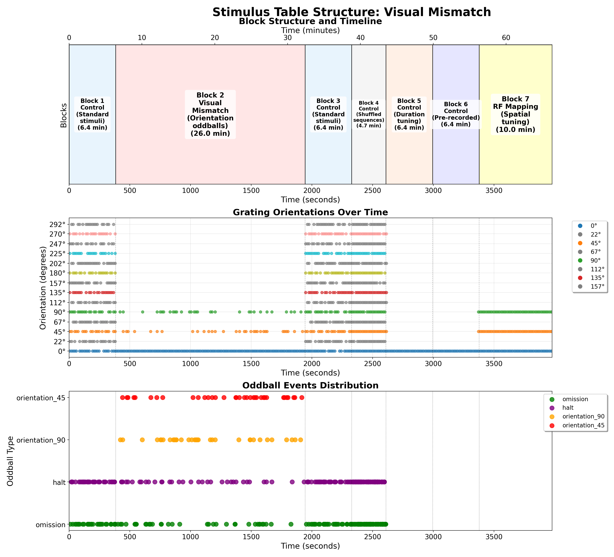

Standard Oddball Stimulus
Overview
The Standard Oddball stimulus is designed to investigate predictive coding and stimulus-specific adaptation in the visual cortex. The experiment presents a series of visual gratings where a "standard" stimulus is repeatedly shown, establishing sensory expectations, which are occasionally violated by "deviant" stimuli that differ in orientation, contrast, or temporal frequency.
Stimulus Structure

The figure above shows a comprehensive analysis of the visual mismatch (standard oddball) stimulus structure, including:
- Block Structure Timeline: Shows the temporal organization of different experimental blocks including control, oddball, and RF mapping phases
- Grating Orientations Over Time: Displays the sequence of grating orientations presented throughout the session, with different colors representing different orientation values (0°, 45°, 90°)
- Oddball Events Distribution: Highlights the timing and distribution of oddball events (orientation_45, orientation_90, halt, omission, jitter) across the experimental timeline
The analysis demonstrates the structured presentation of: - Standard Control Blocks: Baseline periods with standard stimuli - Visual Mismatch Blocks: Periods with orientation oddball events (45° and 90° deviants) - RF Mapping Blocks: Spatial tuning phases with localized stimuli
Script Location
The stimulus script is located at:
- /code/stimulus-control/src/Standard_oddball_slap2.bonsai
Hardware Requirements
- SLAP2 imaging system
- Behavior device with encoder/wheel for tracking animal movement
- Digital outputs (DO2) for synchronization with recording equipment
Stimulus Parameters
Basic Parameters
- Display Type: Drifting gratings
- Spatial Frequency: 0.04 cycles per degree
- Temporal Frequency: 2 Hz (standard)
- Contrast: 1.0 (full contrast)
- Size: 360° (full-field gratings)
- Stimulus Duration: 343 ms
- Inter-stimulus Interval: 343 ms (configurable "Delay" parameter)
Configurable Parameters
The script contains several externalized parameters that can be adjusted:
- NbBaselineGrating: Number of standard gratings (default: 20)
- NbMismatchPerCondition: Number of repetitions for each deviant condition (default: 1)
- NbReceptiveFieldRepeats: Number of repetitions for receptive field mapping (default: 1)
Experimental Design
1. Orientation Tuning Component
The experiment includes presentation of 16 different orientations: - 0°, 22.5°, 45°, 67.5°, 90°, 112.5°, 135°, 157.5° - 180°, 202.5°, 225°, 257.5°, 270°, 292.5°, 315°, 337.5°
These orientations are presented in randomized order to characterize orientation tuning of neurons.
2. Standard-Oddball Paradigm
The core of the experiment consists of:
- Standard Stimulus: 0° orientation grating with 2 Hz temporal frequency (repeated ~20 times)
- Deviant Stimuli:
- Orientation deviants: 45° and 90° oriented gratings
- Temporal frequency deviant: 0 Hz (stationary grating at 0° orientation)
- Contrast deviant: 0 contrast (blank screen) with 2 Hz temporal frequency
Each deviant type violates a different expectation established by the standard stimulus: - Orientation deviants test orientation-specific adaptation - Temporal frequency deviant tests motion expectation - Contrast deviant tests luminance expectation
3. Receptive Field Mapping
The experiment includes a mapping component with smaller gratings (20° diameter) presented at locations defined in receptive_field.csv. These specialized mapping gratings have:
- Higher spatial frequency (0.08 cpd)
- Higher temporal frequency (4 Hz)
- Higher contrast (0.8)
- Shorter duration (250 ms)
- No inter-stimulus interval (0 ms delay)
The receptive field mapping coordinates and orientations are loaded from the CSV file and randomized for each presentation sequence.
Data Collection
The script logs all stimulus parameters and timing information to CSV files:
- orientations_logger.csv: Contains timing of stimulus events
- orientations_orientations.csv: Records the parameters of each stimulus presentation
Animal running data is collected via an encoder on Port 2 of the behavior device.
Synchronization
- TTL pulses (100ms) are generated at stimulus onset via DO2 output
- SLAP2 recording is automatically started and stopped during the experiment
Running the Experiment
- Start the Bonsai workflow
- Press the spacebar to begin the experiment
- The experiment can be terminated with the End key
Related Documents
- Bonsai Instructions: Setup and deployment of Bonsai code
- Experimental Plan: Overview of all experimental paradigms
- SLAP2 Hardware: Details about the SLAP2 imaging system used
- Example Experiment: Session notes from an experiment using this stimulus